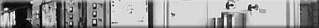
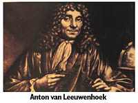
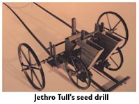
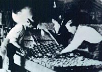
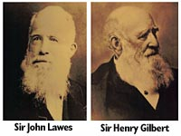
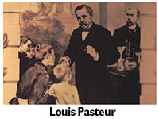
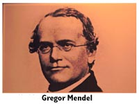

|
|

|
|

|
|
|
|
Beginning in the seventeenth century, the chronology that follows serves as an
overview of the some of the major events that have led up to our modern agricultural and biotechnology industry.
|
- 1670s - Let us begin our story with a realtively unknown researcher:
Anton van Leeuwenhoek (1632-1723), a Dutch amateur scientist.

He was one of the first to improve the simple microscope so that it was capable of seeing microbiological life.
He is often referred to as the father of microbiology because he was the first to make detailed written and
illustrated observations on microscopic life. He was the first person to describe blood cells, bacteria and protozoa.
- 1701 -
The seed drill, invented by Jethro Tull, was the first agricultural machine.

It cut furrows, sowed and covered seed. Delivering increasing yields and more efficient use of seed,
the seed drill showed how farming could be made more productive through the use of farm machinery
to replace hand labour.
- Early 1700s -
Charles Townshend popularized four-field crop rotation of turnips, wheat, barley and clover. This rotation produced both fodder for livestock and cereal grain, helped to control weeds, and to maintain soil fertility.
- 1754 - Grain was grown in the Carrot River Valley region of the
area now called Saskatchewan.
- 1763 - A Royal Proclamation declared that 'consent' was required
from the Indian peoples before their lands could be seeded.
- 1769 - James Watt patented an improved steam engine. Steam technology later led to the development of powered farm machinery.
- 1779 - Peter Pond successfully grew vegetables and potatoes near
Lake Athabasca.
- 1792 - The first wheat grown in Saskatchewan was at Fort a la Corne.
- 1795 -

Canning was developed by a Frenchman, Nicholas Appert. Canning preserves food by enclosing
it in sealed containers and heating to high temperatures to kill bacteria or germs.
Canning made it possible to store perishable products such as fruits and vegetables virtually indefinitely.
- Late 1700s -
In Leicestershire, England, Robert Bakewell pioneered the selective breeding of cattle and sheep to produce meatier animals.
Antoine Laurent Lavoisier, a founder of modern chemistry, discovered the role of oxygen in combustion, proved that water consists of hydrogen and oxygen, and explained the role of oxygen in respiration.
- 1750 - 1850 - The Industrial Revolution, made possible by the application of scientific principles, more capital, and better communications, vastly increased industrial production. Power machinery changed industry from the domestic to the factory system.
- 1810 -
The tin can was invented by Peter Durand in England and food preservation, through the canning process, was greatly improved.
- 1812 - Selkirk settlers grew wheat in the region around the Red River in what is now Manitoba.
- 1834 -
Patented by Cyrus McCormick in the United States, the first practical reaper of grain or grain
harvesting machine, allowed two men to cut as much grain in a day as four or
five men using scythes.
- 1843 -

Considered by many to be the founding fathers of agricultural sciences, Sir John Lawes and Sir Henry Gilbert began a 57 year partnership at Rothamsted, England. The Rothamsted Experimental Station is the oldest agricultural research station in the world. Research conducted here produced a wealth of new ideas and facts, and established the principles of crop nutrition. Classical crop growing experiments and research laid the groundwork for the design of agricultural experiments.
- 1840s - 1850s -
A pioneering German chemist, Justus von Liebig made many important contributions to organic chemistry and to the basic principles of agricultural chemistry. He was one of the first to propose the use of chemical fertilizers.
The development of the chemical fertilizer industry, following from the work of von Liebig and early agricultural scientists such as Lawes and Gilbert, had a major impact on agricultural productivity.
- 1850s -

French chemist and microbiologist Louis Pasteur studied the microbes present in many substances. He discovered a way of keeping beer and milk from souring using
a heat treatment "Pasteurization". He also developed a form of vaccination.
- 1850s - 1880s -
Railway and steamship lines expanded, opening up new markets. Improved methods of refrigeration and canning made possible the long-distance marketing of perishable agricultural products.
- 1857 - 1860 - Palliser and Hind explored the prairies and to reported back
to their respective governments about the possibility of agricultural settlement
in the area.
- 1867 - The Dominion of Canada was formed.
- 1868 - The British government approved the sale of Rupertsland to the Dominion of Canada by the Hudson's Bay Company.
- 1870 - The Homestead Act was passed. It was designed to entice settlers to western Canada.
The Manitoba Act provided legislation to enable the government
to issue land to the Métis people. This was accomplished
through the process of land scrip. A certificate was provided
to each Métis describing a specified number of acres and
the name of the person to whom the land was granted. A total of
1,400,000 acres in the areas now known as Saskatchewan, Alberta
and Manitoba was set aside in this manner.
Red Fife wheat was first introduced to the prairies.
- 1871 - Seven treaties were signed with the Indian to peoples.
- 1877 - Indian reserves were established.
The first wheat shipment from western Canada was sent to
Great Britain.
- 1879 - The buffalo herds disappeared from the prairies.
By this time many Métis people had settled on farms around
established missions.
- 1880 - The federal government initiated programs to increase agricultural
activities on Indian reserves.
During the 1880s ranching began in the southwest region of what
is now Saskatchewan.
- 1880s - 
An Austrian scientist and monk, Gregor Mendel discovered the basic principles of heredity through carefully controlled experiments in cross breeding. His work paved the way for improving crops through genetics.
Hybrids are the offspring of parents from different breeds, varieties or closely related species. Hybrids are often superior in many ways to their parents - a phenomenon called hybrid vigour. Hybrid pigs have been bred that grow faster and have more lean meat than earlier breeds.
- 1882 - The Canadian Pacific Railway (C.P.R.) was constructed through the territory now called Saskatchewan.
- 1884 - The first grain commissioner was appointed in Winnipeg.
1.5 million bushels of wheat were exported.
- 1885 - The Canadian Pacific Railway was completed from coast to coast.
The confrontation between the federal government and Indian and
Métis peoples at Batoche resulted in major changes in the
Indian reserve agriculture program.
- 1887 - A 680 acre experimental farm was established at Indian Head.
The Winnipeg Grain and Produce Exchange was established. It is
now called the Winnipeg Commodity Exchange.
- Late 1880s -
Louis Pasteur (1822 - 1892), a French microbiologist and chemist, pioneered the study of microbes. He showed the role of microorganisms in fermentation, devised pasteurization as a way of stopping beer and milk from souring, popularizing sterilization and developed a form of vaccination.
- 1890s -
The combine harvester, which combined the cutting and threshing of grain crops, came into widespread use in the western United States. It reduced the amount of labour needed to harvest a field of wheat by more than 80 percent.
The first gasoline and diesel powered tractors were built. More efficient and less cumbersome than steam-powered tractors, they gradually became the main agricultural "workhorse" in many parts of the world.
- 1896 - The Western Stock Growers' Association was formed.
- 1897 - The Crowsnest Pass Agreement established fixed rates for the movement of prairie grain.
- 1899 - Charges of unfair practices and monopoly were made against the elevator companies and railroad by farm groups such as the
Patrons of Industry. These complaints led to a royal commission
that recommended the establishment of government regulations.
These regulations were introduced in the Manitoba Grain Act of
1900. This was the first example of effective farm group action.
- 1900 - The Manitoba Grain Act, now called the Canadian Grain Act, was passed.
The first mutual hail insurance was established. Although ineffective,
it laid the basis for future developments.
- 1901 - The Territorial Grain Growers' Association was formed with the help of the Indian Head Agricultural Society.
- 1903 - At the Indian Head Experimental Farm Dr. Charles Saunders developed a new strain of wheat, Marquis, by crossing Red Fife
wheat with an earlier maturing, hard, red wheat from India. Marquis
wheat was better suited to the climatic conditions of Saskatchewan.
- 1904 - The speed of settlement on the prairies increased.
- 1905 - The Province of Saskatchewan was established.
The number of homesteads registered in the province was 90,669.
The Saskatchewan Association of Rural Municipalities (SARM) and
the Saskatchewan Stock Growers' Association were formed.
- 1906 - The Territorial Grain Growers' Association was renamed the Saskatchewan Grain Growers' Association. The Saskatchewan Grain Growers' Association initiated the formation of the Grain Growers' Grain Company by prairie farmers dissatisfied with the marketing of their grain. This company was the first farmerowned grain company to trade on the Winnipeg Grain Exchange.
- 1909 - Approval for use of Marquis wheat was given by the federal government.
- 1910 - The Saskatchewan Dairy Association and the Saskatchewan Purchasing
Company were formed.
- 1911 - The first Saskatchewan Association of Homemakers' Club was formed in Regina, Saskatchewan.
The Saskatchewan Cooperative Elevator Company was formed.
- 1912 - The Canada Grain Act was passed by the federal government. This established the Board of Grain Commissioners for Canada to arbitrate disputes in the grain industry.
The College of Agriculture was established at the University of
Saskatchewan.
- 1913 - Women's Grain Growers Association was formed.
- 1914 - The South Saskatchewan Wool Growers' Association was formed.
- 1916 - The first grain terminal was built at Vancouver.
After much lobbying by farm women, women received the right to
vote in Saskatchewan.
- 1917 - The Saskatchewan Cooperative Creameries Limited and Saskatchewan Municipal Hail Insurance were formed.
- 1918 - Around 290,000 homesteads were registered in Saskatchewan. The population of the province was about 675,000 people.
- 1919 - The Canadian Wheat Board was appointed, enabling the federal government to take over the marketing of western Canadian wheat. There was dissension among farm organizations regarding the support of the concept of marketing presented by the establishment of the Canadian Wheat Board.
The Saskatchewan Hereford Association, the Saskatchewan AberdeenAngus
Association and the Saskatchewan Agricultural Society were organized.
- 1920s - 1930s -
Scientists improved many crops such as corn by hybridization; the crossing of individuals from different genetic backgrounds. New strains showed the phenomenon known as hybrid vigour.
- 1920 - The federal government discontinued the Canadian Wheat Board.
- 1921 - Disagreement within the Saskatchewan Grain Growers' Association resulted in the formation of the Farmers' Union of Canada in Saskatchewan.
- 1924 - The Saskatchewan Cooperative Wheat Producers Ltd. was formed.
In 1944 its name became the Saskatchewan Cooperative Producers
Ltd. and in 1953 it was renamed the Saskatchewan Wheat Pool, Canada's
largest grain handling company and largest farmerowned cooperative.
- 1925 - The federal government passed legislation establishing Crowsnest grain rates for all grain and flour being transported to Port
Arthur and Fort William (now Thunder Bay) from all western railway
points.
A federal government grain terminal was built at Prince Rupert.
- 1926 - The Saskatchewan Cooperative Wheat Producers Ltd. purchased the Saskatchewan Cooperative Elevator Company.
- 1927 - Crowsnest grain rates were extended to the west coast.
- 1928 - The number of bushels of wheat that were exported is 344 million.
- 1929 - The stock market crash in October preceded the beginning of a worldwide Depression.
The Canadian Seed Growers' Association (Saskatchewan) and the
Saskatchewan Turkey Association were formed.
The federal government created the Canadian Farm Board to offer
financial assistance to farmers.
- 1930 - A grain elevator was constructed at the port of Churchill
following the completion of the Hudson Bay Railway line to Churchill.
A drought, poor crops and dust storms on the prairies during the
1930s, coupled with the Depression, caused this decade to be referred
to as the Dirty Thirties.
- 1932 - The Saskatchewan Cooperative Abattoir (now Intercontinental Packers) was opened.
- 1933 - Wheat prices fell to just over $0.39 per bushel (Fort William) and yearling steers averaged $2.75 per hundred (Saskatchewan Feeder Show, Moose Jaw).
- 1935 - The Prairie Farm Rehabilitation Act (PFRA) was passed, establishing the federal agency. It developed from the ideas of scientists at experimental farms, universities and departments of agriculture and from established agricultural practices such as dugouts, strip farming, soil analysis and community pastures. The Canadian Wheat
Board
was established as a crown agency to export western Canadian
wheat and barley, and to market milling wheat and some feed grain
in Canada.
- 1937 - This year was described as the worst of the Dirty Thirties: drought into the northern parkland, grasshoppers, heat, dust,
army worms, an encephalomyelitis epidemic and depressed markets.
Saskatchewan R.O.P Breeders' Cooperative was formed.
- 1939 -
Introduced by the Swiss as a synthetic chemical insecticide, DDT virtually wiped out many insect-borne diseases such as malaria. Before its harmful effects were discovered, it was heavily used in agriculture around the world.
- 1940s -
Through scientific advances and improved management techniques, farmers produced more food than ever before using less land and labour, but more chemicals, energy and capital.
The development and widespread use of more efficient machines in industrialized countries increased productivity and sharply reduced the number of people working in agriculture.
- 1943 - The Canadian Wheat Board controlled all marketing of western Canadian wheat.
- 1944 - The Saskatchewan Cooperative Livestock Producers Ltd. and the
Saskatchewan Cooperative Wheat Producers Ltd. joined together to
form the Saskatchewan Cooperative Producers Ltd.The Saskatchewan
Federated Cooperatives Limited was formed by the amalgamation of the
Consumer's Cooperative Refineries Limited and the Saskatchewan
Cooperative Wholesale Society Limited.
- 1947 - The federal government introduced the grain quota system administered by the Canadian Wheat Board.
The first true electronic computer dates from 1947. Early computers were very large, filling several rooms with vacuum tubes and large magnetic drums. Computers were to affect almost every area of science and technology.
- 1948 - The Dairy and Poultry Marketing Association Ltd. was formed by combining the Saskatchewan Cooperative Poultry Pool and the
Dairy Cooperative Marketing Association.
- 1949 - The Saskatchewan Farmers' Union was formed.
The first International Wheat Agreement (IWA) was signed and ratified
by four exporting and 38 importing countries. This agreement set
the maximum price for wheat at $1.80 US per bushel.
- 1953 - The second International Wheat Agreement was established, setting the maximum price for wheat at $2.05 US per bushel.
Francis Crick and James Watson discovered the structure of DNA - the genetic basis of all living things. This made possible genetic engineering which, for agriculture, could mean genetically improved plants and animals, more resistant to disease, and more productive.
- 1954 - Selkirk wheat, a strain of wheat resistant to rust, was introduced.
- 1956 - The third International Wheat Agreement set the maximum price for wheat at $2.00 US per bushel.
- 1957 - Saskatchewan 4H Clubs were established.
- 1959 - The fourth International Wheat Agreement lowered the maximum price for wheat to $1.90 US per bushel.
The Farm Credit Corporation, a lending agency for producers, was
formed by the federal government.
- Late 1950s -
Introduction and widespread use of artificial insemination for breeding livestock.
The technique produces many offspring from selected males.
- 1962 - The fifth International Wheat Agreement raised the maximum price to
$2.021/2 US per bushel.
- 1964 - The Saskatchewan Forage Crop Growers' Marketing Association became part of the Saskatchewan Wheat Pool.
- 1965 - Mexhibition, an agricultural show, was held in Saskatoon and Regina.
- 1966 - Approximately 807 million bushels of wheat, a bumper crop, was harvested.
- 1968 - The sixth International Grains Arrangement (IGA) established prices
for a number of grades and strains of wheat. Exporters agreed to commit some of their production to food aid.
- 1969 - The International Grains Arrangement failed. In March Canada dropped
its price of wheat below the floor market price.
- 1970 - The first annual Canadian Western Agribition was held in Regina.
XCan Grain Limited was formed by the three prairie Wheat Pools
and the United Grain Growers to help market western Canadian grain
for the producers of western Canada.
The Board of Grain Commissioners changed its name to the Canadian
Grain Commission. Changes in the grading system were made. Canada
western grades and guarantees of protein level to customers requesting
it were introduced.
Palliser Wheat Growers was established. It later changed its name
to Western Canadian Wheat Growers.
- 1972 - Dairy Producers Cooperative Ltd., Saskatchewan Farm Vacations' Association
and the Saskatchewan Hog Marketing Commission were formed.
The Federation of Saskatchewan Indians was mandated to set up
a committee on Indian agriculture. The Agriculture Institute of Canada did a
study on the potential of agriculture on Indian reserves.
The Saskatchewan Indian Agriculture Program (SIAP) was proposed.
The Saskatchewan Land Bank Act was passed to establish the Saskatchewan
Land Bank Commission. The Land Bank was to assist intergenerational
transfer of farms and improve the viability of uneconomic farms.
- 1973 - The Agriculture Incentives Act was passed. It set up Farm Start to encourage farmers to become involved in livestock production.
- 1974 - The Saskatchewan Horse Federation and the Saskatchewan Livestock Association were organized.
- 1977 - The Saskatchewan Indian Agriculture Program was established as a nonprofit organization with its own board of directors and representation from all Indian bands. The federal Department of Indian Affairs was the governing body.
Following the poor crop of 1977, legislation was passed to protect
farmers against foreclosure.
- 1978 - Grain was moved from 1600 delivery points to five ports on 20,000 miles of track supplied by three railway companies. This
can be compared to 1897 when grain was moved from 289 delivery points
to one port over one company's 3000 miles of railway track.
- Early 1980s - In developing countries, farmers began using computers to keep farm accounts, to monitor crop prices and weather conditions, and to aid in farm management.
- 1983 - A record amount of wheat was exported-29.5 million tonnes.
The Saskatchewan Land Bank Commission was disbanded.
- 1988 - The Potato Lake Horticulture Project was established in northern Saskatchewan to determine the viability of growing vegetables and fruit in the North.
The Agricultural Insight Foundation Inc. was formed to enhance
public agricultural knowledge.
- 1990 - The price of wheat dropped to about $2.00 a bushel.
Record numbers of cattle were shipped out of province.
- 1991 - The new College of Agriculture building at the University of Saskatchewan was opened.
The Gross Revenue Insurance Plan (GRIP)and the Net Income Stabilization
Account (NISA) programs were introduced jointly by federal and
provincial governments.
- 1995 - The Crow Rate (grain transportation subsidy) is dissolved.
- Present -
Scientists working in agriculture have convergent interests with other fields of science, including medicine, biochemistry, biophysics, computer science, and the social sciences. As new scientific discoveries and developments take place, many of them have direct and indirect effects on agriculture and our lives.
|
|
|
|